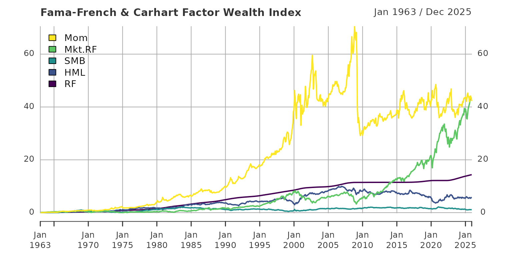

The following gives an example on how the process of selecting and retrieving the necessary files for processing is done. We start by specifying a target directory and target file names. Here, these are created in a directory that is named based on the download date within a folder called “data”.
library(FFdownload)
outd <- paste0("data/",format(Sys.time(), "%F_%H-%M"))
outfile <- paste0(outd,"FFData_xts.RData")
listfile <- paste0(outd,"FFList.txt")Next, we download a list of all available files on Kenneth French’s website. We exclude all daily files to keep the list short.
FFdownload(exclude_daily=TRUE,download=FALSE,download_only=TRUE,listsave=listfile)
#> Step 1: getting list of all the csv-zip-files!
read.delim(listfile,sep = ",")[c(1:4,73:74),]
#> X x
#> 1 1 F-F_Research_Data_Factors_CSV.zip
#> 2 2 F-F_Research_Data_Factors_weekly_CSV.zip
#> 3 3 F-F_Research_Data_Factors_daily_CSV.zip
#> 4 4 F-F_Research_Data_5_Factors_2x3_CSV.zip
#> 73 73 F-F_Momentum_Factor_CSV.zip
#> 74 74 F-F_Momentum_Factor_daily_CSV.zipFrom this list we select the files to download. In our case we use the 3 Fama-French-Factors:
- “F-F_Research_Data_Factors_CSV”
- “F-F_Momentum_Factor_CSV”
and download these files without processing them (for the sake of showing how the package works).
inputlist <- c("F-F_Research_Data_Factors_CSV","F-F_Momentum_Factor_CSV")
FFdownload(exclude_daily=TRUE, tempd=outd, download=TRUE, download_only=TRUE, inputlist=inputlist)
#> Step 1: getting list of all the csv-zip-files!
#> Step 2: Downloading 2 zip-files
list.files(outd)
#> [1] "F-F_Momentum_Factor_CSV.zip" "F-F_Research_Data_Factors_CSV.zip"Now we process these downloaded files and create a final “RData” file with a certain list structure from it. Due to the separation of the downloading and processing stage this can be done repeatedly for any data set saved at a certain point in time in a relevant folder.
FFdownload(exclude_daily=TRUE, tempd=outd, download=FALSE, download_only=FALSE, inputlist=inputlist, output_file = outfile)
#> Step 1: getting list of all the csv-zip-files!
#> Step 3: Start processing 2 csv-files
#> | | | 0% | |=================================== | 50% | |======================================================================| 100%
#> Be aware that as of version 1.0.6 the saved object is named FFdata rather than FFdownload to not be confused with the corresponding command!Let us check the structure of the created list (after loading into the current workspace).
load(outfile)
ls.str(FFdata)
#> x_F-F_Momentum_Factor : List of 3
#> $ annual :List of 1
#> $ monthly:List of 1
#> $ daily : Named list()
#> x_F-F_Research_Data_Factors : List of 3
#> $ annual :List of 1
#> $ monthly:List of 1
#> $ daily : Named list()Now we process the data using code provided to me by Joshua
Ulrich (the developer of xts). Therein we merge all monthly
xts-files, select data as off 1963, divide by \(100\) because returns are given in percent,
caluclate monthly returns and finally plot the resulting
xts.
monthly <- do.call(merge, lapply(FFdata, function(i) i$monthly$Temp2))
monthly_1960 <- na.omit(monthly)["1963/"]
monthly_returns <- cumprod(1 + monthly_1960/100) - 1
plot(monthly_returns)